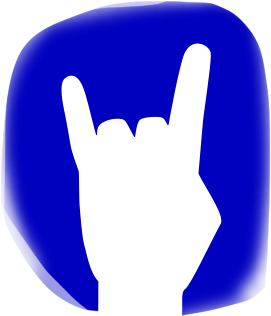

Welcome to Pagina de los Manos
In Patagonia there is a prehistoric site called Cueva de los Manos. It is one of the Earth's most ancient examples of artistic expression, composed of stenciled hand imprints alongside depictions of animals and hunting activities.

I've always found this to be an inspiring example of humankind's impulse to make a mark. The hands are anonymous and expressionless, only indicating that someone was present at some point in time.
This site, Pagina de los Manos, is an attempt to recreate the anonymous presence of the cave in a digital setting. Your device's camera will capture your hand in one of three poses: peace sign ✌️, horns 🤘, or open palm ✋ and a click of the mouse will set the pose forever in the page. You may see others anonymously adding their imprints as you add your own.